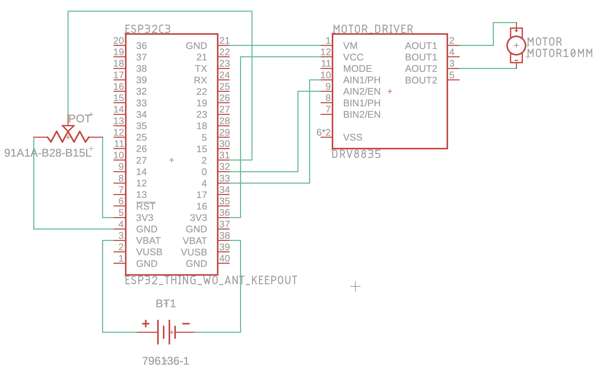

Kinematic Sculpture Electronics
The electronics covered here were inside of my kinematic sculpture. If you want to find out more about that project click here.
Electronic Design Process:
I wanted to be able to control the speed of my sculpture without having to reprogram the ESP32 every time so I decided on using a potentiometer for that.
Schematic:
List Of Parts
- ESP32-C3 Micro Controller
- Potentiometer
- Bread Board
- Yellow Hobby Motor
- L9110S DC Motor Driver
- Bunch of wires
Build Process
After I finished designing my circuit I started constructing it.
Originally I planned to place the ESP32 inside of the breadboard like this:
However, this caused some connection issues resulting in the motor not being able to change speeds and not being able to read data from the potentiometer, so I ended up taking the ESP32 out, which made my circuit construction just a little messier.